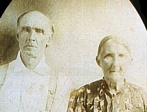

|
|
| 
Nancy Jane JONES (1842-1920) |
Nancy Jane JONES
-- Linda Haas Davenport, ARGenWest Project (Marion County, Arkansas) (www.argenweb.net/marion) Nancy married Ebenezer "Ebb" B. NEWTON, son of Allen NEWTON and Elizabeth WILSON, on 8 Aug 1858 in Iron County, Missouri. (Ebenezer "Ebb" B. NEWTON was born on 5 May 1838 in North Carolina, died on 3 Jan 1912 in Henderson, Baxter County, Arkansas and was buried in Wake Cemetery, Baxter County, Arkansas.) |
 Research Notes:
Research Notes: